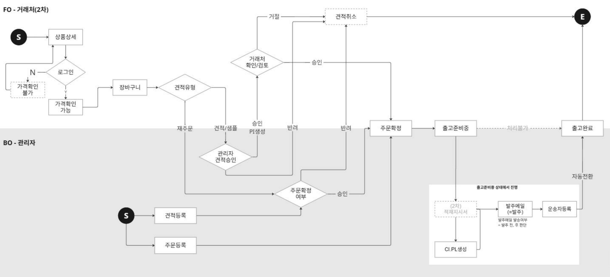

4개 메뉴는 아래와 같은 하나의 흐름으로 이어집니다. 거래처를 먼저 등록하고, 판매할 상품을 등록한 뒤, 거래처의 견적을 승인하면 주문으로 확정되어 출고까지 진행됩니다.
거래처(FO) 사이트 이용 과정까지 포함한 상세 흐름도입니다. 고객이 이용하는 해외 B2B 사이트(FO) 개발이 모두 완료된 이후를 기준으로 작성되어 있어, 현재 시점의 화면·기능과는 차이가 있을 수 있습니다.

위쪽(흰 배경)은 거래처가 사이트에서 직접 진행하는 절차이고, 아래쪽(회색 배경)은 관리자가 처리하는 절차입니다.
해외 B2B 사이트를 이용하는 거래처(고객사)의 기본정보·주문내역·문의내역을 조회하고 관리합니다.
ERP/상품마스터 정보를 연동하여 해외 B2B 사이트에 노출할 상품을 등록하고, 판매상태·가격·규격 정보를 관리합니다.
거래처가 접수했거나 관리자가 직접 등록한 견적 건을 검토하여 승인·거절하고, 승인된 건은 주문으로 확정합니다.
확정된 주문의 출고·운송 정보를 입력하고, 발주·서류 생성부터 출고 완료까지 전체 진행 상태를 관리합니다.